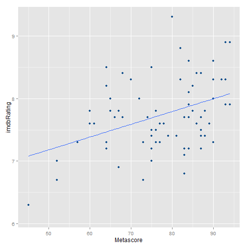

Oscar shiny app explores data from the movies that were nominated in the Oscar ceremonies.server.R and ui.R files from the github, library(shiny)
runApp()
The original dataset lists information about each nomination for each year.
oscar.csv database lists 10 variables about 10098 nominations.From this, a second dataset was created and takes the point of view of each film. Number of academy nominations and awards were summed, and extra information was pulled out using the omdb api. The resulting movie.csv database lists 27 variables about 4361 nominated movies.
t <- "Titanic"
y <- "1997"
url <- paste0("http://www.omdbapi.com/?t=",t,"&y=",y,"&plot=short&r=json")
temp <- as.data.frame(fromJSON(url))
In the side panel, you can filter the dataset, either by year, by number of oscar nominations or awards. - For instance, the data can be filtered for the period 1980-2000, with a minimum number of 5 nominations and 0 awards. - The movie database is the filtered using the following r code:
minYear <- 1980; maxYear <- 2000; minNomination <- 5; minAward <- 0
movieSubset <- filter(movie, Year >= minYear, Year <= maxYear,
Academy.Nominations >= minNomination, Academy.Awards >= minAward)
Additionnaly, you can select variables for the x- and y-axis of the graph and the for the linear model. - For instance, the metascore and the imdb user rating could be selected as the x and y variables.
plotData <- data.frame(y = movieSubset[["imdbRating"]], x = movieSubset[["Metascore"]])
For the preceeding filtered subset of movies and the variables selected, the Oscar shiny app would output the following graph:

##
## Call:
## lm(formula = as.formula(paste("imdbRating", " ~ ", "Metascore")),
## data = movieSubset)
##
## Residuals:
## Min 1Q Median 3Q Max
## -1.05376 -0.39359 -0.09442 0.34108 1.50724
##
## Coefficients:
## Estimate Std. Error t value Pr(>|t|)
## (Intercept) 6.166080 0.432039 14.272 < 2e-16 ***
## Metascore 0.020333 0.005502 3.696 0.000421 ***
## ---
## Signif. codes: 0 '***' 0.001 '**' 0.01 '*' 0.05 '.' 0.1 ' ' 1
##
## Residual standard error: 0.5305 on 73 degrees of freedom
## (46 observations deleted due to missingness)
## Multiple R-squared: 0.1576, Adjusted R-squared: 0.1461
## F-statistic: 13.66 on 1 and 73 DF, p-value: 0.000421